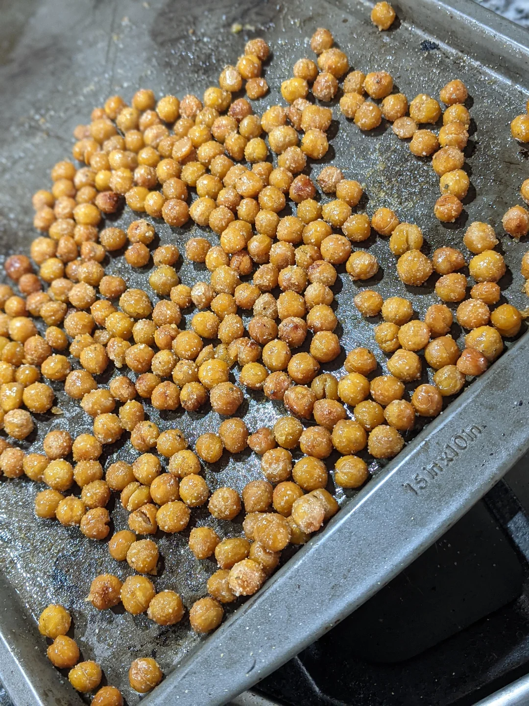

Crispy Chickpeas

Description
A classic and healthy snack, who doesn't love chickpeas! Listed below are some example seasonings.
Ingredients
- 1 can chickpeas
- About 1/2 tablespoon of olive oil
- 1/2 tablespoon salt
- 1/2 glove of minced garlic
- Tablespoon of nutritional yeast
- 1/2 tablespoon chili powder
- parsley
- thyme
Steps
- Drain and rinse 1 can of chickpeas, remove any loose skins
- Pat dry or sit out to dry. Once dry, drizzle with olive oil and sprinkle with salt. If the chickpeas aren't allowed to completely dry they won't crisp as well.
- Bake on 400 F for 20 minutes
- Toss with whatever seasoning you'd like, sky is the limit!